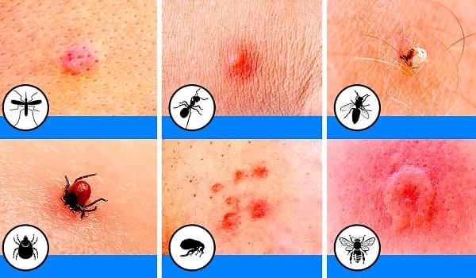
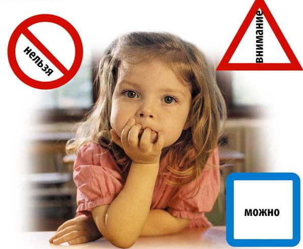
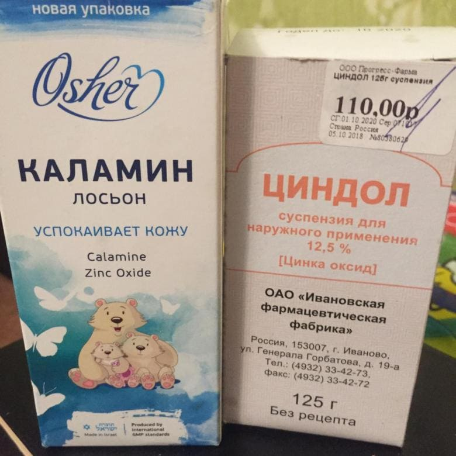
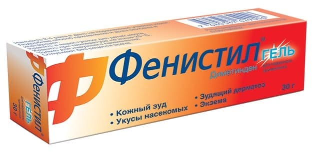
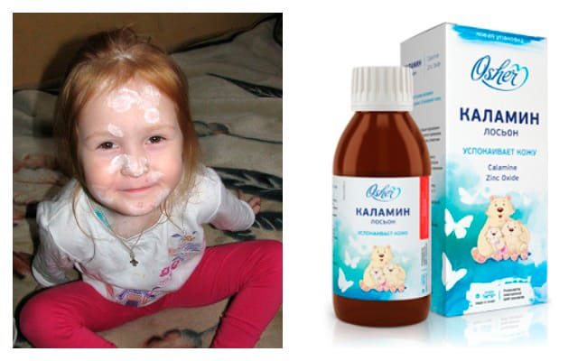
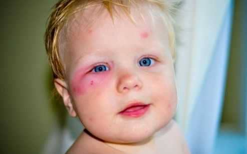

Детская кожа нежная, она более уязвима к разного рода повреждениям. В теплое время года ребенок нередко подвергается укусам гнуса (комаров, мошек, слепней и т. д.). Как ему помочь?

1) Прежде всего старайтесь предотвращать укусы. Фумигаторы, репелленты, москитные сетки и другие средства защиты вам в помощь.
NB! Используйте химические вещества строго по инструкции. Помните о потенциальном риске для ребенка: об опасности отравления и/или химическом ожоге слизистых при случайном распылении ребенком репеллента себе в рот или глаза. Помните про риск выпадения ребенка из окна при использовании москитной сетки.

2) При выезде в деревню, на природу и т. д. заранее купите и возьмите с собой лосьон Каламин или болтушку Циндол.

Эти препараты представляют собой взвесь белого мельчайшего порошка в воде, наносятся на места укусов сразу после появления реакции на укус. По мере высыхания дают ощущение приятного холодка, на коже остается белая корочка из порошка, которая затем осыпается или легко смывается водой. Препараты лучше всего подходят маленьким детям с крупными воспаленными элементами сыпи (5-30 мм в диаметре) в местах укусов, они эффективно снимают зуд (а, следовательно, предотвращают расчесы, мокнутие и вторичное инфицирование элементов сыпи), значительно ускоряют заживление кожи и в целом заметно облегчают жизнь как покусанному ребенку, так и его родителям. Могут применяться с первых дней жизни ребенка.
3) При отсутствии Каламина и Циндола можно использовать Фенистил гель как препарат первой линии терапии при неинфицированных укусах.

Антигистаминные препараты внутрь показаны при сильном зуде, нарушающем сон, но перед их применением желательно посоветоваться с вашим педиатром.
4) Если ребенок все же расчесал элемент сыпи и он мокнет, то продолжайте мазать Каламином/Циндолом, перед каждым новым нанесением смывайте с кожи белую корочку и осматривайте место укуса, следите за признаками вторичной бактериальной инфекции.

До приема врача вы можете сделать следующее:
• если моргание неэффективно (или ребенок вовсе не может моргать) – капать в глазную щель любой препарат искусственной слезы, в охлажденном виде, каждые 2–3 часа;
• если на ресницах или в углу глаза скапливается желтый/зеленый гной – капать в глазную щель глазные капли с антибиотиком, например левомицетитновые глазные капли или Тобрекс (разрешены детям с рождения) по 2 капли каждые 6 часов;
• прикладывать к отечному веку холод (курица из морозилки, обернутая в один слой полотенца) – 5 минут охлаждаем, 10 минут даем коже отдохнуть.
При появлении признаков вторичного инфицирования (золотистые корочки по периферии мокнутия, краснота, усиление местного отека кожи вокруг расчеса, заметно горячая кожа в этом месте, жалобы ребенка на боль при прикосновении к элементу, белая головка гноя на вершине элемента сыпи) нужно начать применение антибактериальной мази с мупироцином (Бактробан, Бондерм, Супироцин и т. д.) по инструкции, и в ближайшие сутки обратиться к врачу. Нагноение элементов может быть опасным, особенно в складках кожи (шея, пах, подмышки, большие половые губы); может распространяться внутрь кожи и даже приводить к флегмоне (гнойному воспалению подкожной клетчатки) и требовать антибиотиков внутрь (только по назначению врача!)
5) Отдельную опасность представляют укусы мошек в веко.

Веко может сильно отекать, вплоть до полного закрытия глаза. Это сдавливает глаз, нарушает естественный ток слезы, приводит к сухости, резкому зуду глаза, конъюнктивиту и т. д. Кроме того, отек век на укус насекомого может осложниться флегмоной орбиты (гнойным воспалением подкожной клетчатки вокруг глазного яблока), а это чрезвычайно опасно. Поэтому при сильном отеке века также нужно показать ребенка врачу.
6) По возможности не позволяйте ребенку чесать места укусов, особенно глаза. Часто мойте ребенку руки с мылом, коротко остригите ногти, мойте ребенка в душе 1–2 раза в день – это снизит риск вторичных кожных инфекций.
7) В средних широтах России комары и мошки почти никогда не переносят возбудителей опасных инфекций. Однако при посещении жарких стран вам следует помнить о риске малярии, лихорадки Денге и других тяжелых инфекционных заболеваний, подробно ознакомиться с мерами профилактики для туристов, узнать и запомнить первые симптомы этих болезней и заранее выяснить адреса/ телефоны медицинских учреждений, в которые нужно обращаться при появлении симптомов болезни.
Укусы гнуса могут сильно осложнить вам жизнь. Обычно дети до 2–3 лет очень склонны к развитию крупных элементов сыпи с сильным зудом на каждый укус. С возрастом эта повышенная чувствительность уходит, и применение специальных средств ухода за кожей после банальных неинфицированных укусов гнуса становится ненужным.